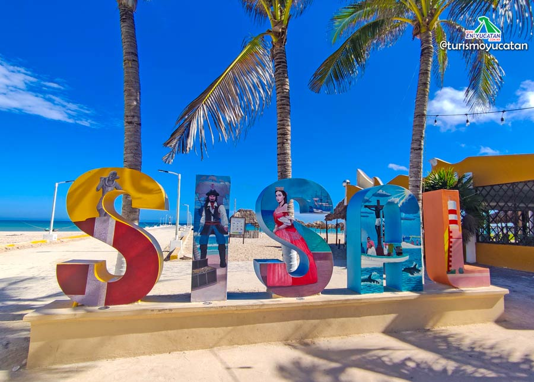

Acercarse
a Mérida y sus pueblos mágicos es cncontrase con gente cálida dispuesta
a conversar, enseñar su labor o su legado gastronómico. Es sumergirse
en cenotes sagrados, es recibir las bondades de los dioses en chichén
itzá.
En bici o a pie, andar por sus calles llenara de magia el corazón.
+

Tekax
Sisal
Espita

MANÍ
MOTUL
IZAMAL
En Yucatán, la cultura maya lo inunda todo en sus pueblos, zonas arqueológicas y ciudades.
Sus pueblos tradicionales derrochan encanto, presumen artesanías exquisitas e invitan a
probar el inolvidable sabor de su gastronomía.
Para conocer. Yucatán a profundidad hay que recorrerlo con pasión y
regresar una y otra vez.
Yucatán viene de una historia que cuenta que los habitantes mayas,
cargando joyas de jade, contestaron a los españoles “yucatán”
cuando éstos les preguntaron qué llevaban en las manos. Tiene un clima
cálido subhúmedo y presenta una temperatura de 26°C anual.
Cuenta con los pueblos mágicos de Izamal, Valladolid, Maní y Sisal.
Las ciudades prehispánicas de Uxmal y Chichén Itzá son Patrimonio de la Humanidad.
...Autores...
Canul Ek Jesus
Chi Joel
Escamilla Ramirez Jose